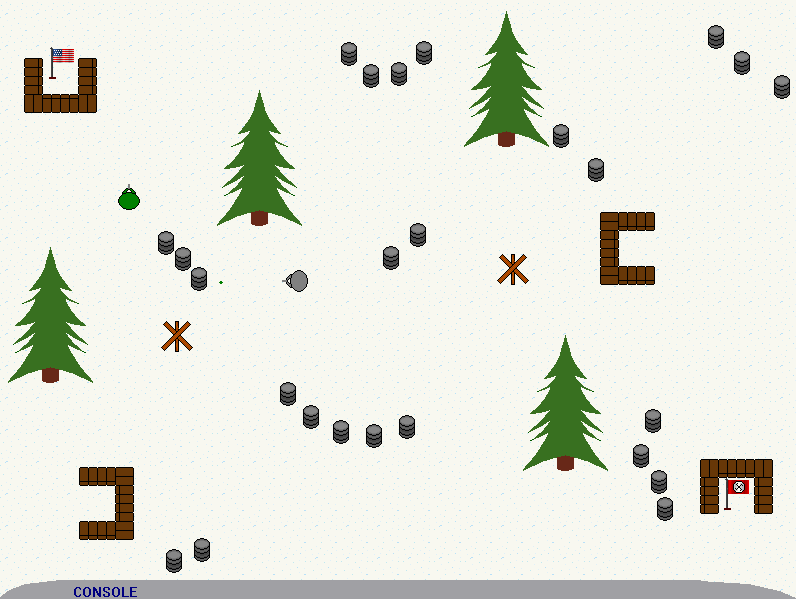

The Land of Stickmen II Soundtrack
RFI
A war-torn soundtrack composed by RFI for Wormmaster's game The Land of Stickmen II.
Anguish - mp3 Battle - mp3 Caverns- mp3 Charge - mp3 Credits - mp3 Introduction - mp3 Reflection - mp3 Reprise - mp3 Resurrection - mp3 Safety - mp3 Stealth - mp3 Urban - mp3 Waltz - mp3 Woods - mp3
Airsoft Capture the Flag Soundtrack
RFI
This soundtrack was written over a weekend in 2006 for Wormmaster's game Airsoft Capture the Flag
Battle - mp3 Credits - mp3 Introduction - mp3 Poplar - mp3 Statistics - mp3 Victory - mp3Hitler Rants: The Last Straw Soundtrack
IngramJ
Some of IngramJ's music for his latest project was composed by none other than himself!
Street Sweepin' - midiSnow Commando Soundtrack
RFI
Composed in 2005 for Rodrinator's game South Park Soldiers Snow Commando. Unfortunately, this game was never finished.
Briefing - midi Chime Major - midi Chime Minor - midi Credits - midi Cutscene A - midi Cutscene B - midi Cutscene C - midi Cutscene D - midi Cutscene E - midi Cutscene F - midi Cutscene H - midi Cutscene I - midi Cutscene J - midi Extra - midi Game Over - midi Intro - midi Level A - midi Level B - midi Level C - midi Level D - midi Level E - midi Level F - midi Level G - midi Level H - midi Level I - midi Level J - midi Level K - midi Level L - midi Level M - midi Misc - midi Misc 2 - midi Multiplayer - midi Options - midi Rodrinator Theme - midi Sub Options- midi Transition - midi2024 South Park Gaming